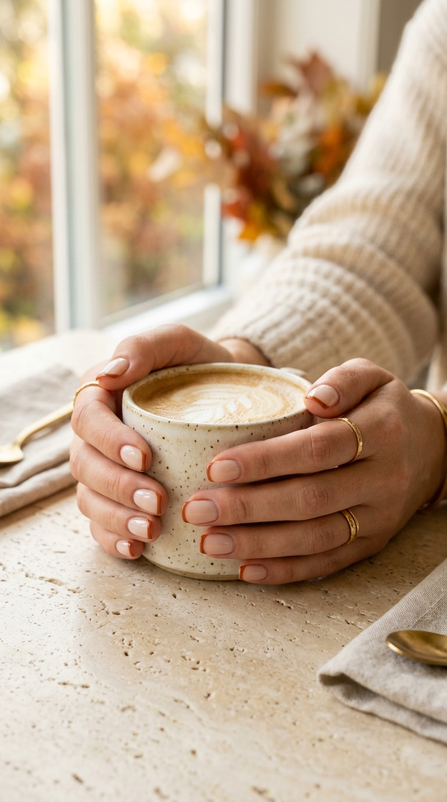

Toasted Caramel Glaze, Cinnamon Micro-French & Espresso Glass: The Late Autumn Color Edit
As the season turns crisp, manicures shift toward comforting, tonal luxury. An editorial exploration into toasted caramels, spiced micro-tips, and deep molasses glass textures with copyable salon tech formulas.

The Toasted Caramel Butter Glaze: Radiance for Chunky Knits
The beloved glazed donut manicure receives an opulent autumnal makeover. By layering a sheer, buttery honey-caramel base beneath ultra-fine champagne chrome dust, this design captures every sliver of low afternoon autumn light. It feels warm, luminous, and undeniably luxurious against heavy-gauge knitwear.
Tapered Almond (Medium Length)
Elongates fingers and provides maximum reflective surface.
Liquid Chrome Dust over Non-Wipe Gel
Sealed under a chip-proof plumping glass topcoat.
"Medium tapered almond nails. Apply one sheer coat of warm caramel jelly gel. Buff an ultra-fine layer of soft champagne-gold pearl chrome dust across the entire nail plate, and seal with a heavy-duty non-wipe glossy topcoat."
The Cinnamon Spice Micro-French: Subtle Lines for Morning Routines
For lovers of minimal manicures, the traditional white French tip often feels too clinical for the warm sweater season. This seasonal adaptation pairs a semi-sheer milky oat-milk foundation with a 1mm razor-thin smile line painted in rich spiced cinnamon terracotta. It feels quiet, intentional, and impeccably clean.

Short Natural Square or Soft Squoval
Keeps the aesthetic functional and understated.
1-Millimeter Micro Smile Line
Painted with an ultra-fine detail brush along the free edge.
"Natural squoval shape. Apply two sheer coats of milky oat-white rubber base (around 60% opacity). Paint a crisp, 1-millimeter razor-thin micro-French smile line in spiced cinnamon rust along the free edge, capped with high-shine topcoat."
The Noir Espresso Glass Jelly: Depth, Patina & Autumn Evenings
Moving away from stark opaque black, high-fashion runways embrace the depth of roasted coffee beans. This look relies on translucent espresso jelly syrup layered to create dark syrup edges while letting natural light pass through the center. Evocative of vintage leather bindings, dark roast espresso, and rare amber perfumes.
Natural Squoval or Rounded Oval
Accentuates the vintage, bookish dark academia silhouette.
Translucent Jelly Layering
Prevents the color from appearing flat, chalky, or opaque.
"Rounded squoval nails. Apply one coat of semi-sheer dark chocolate jelly syrup, followed by a second coat concentrated through the center to create rich depth. Cap with a plumping wet-look glass topcoat for zero matte dullness."